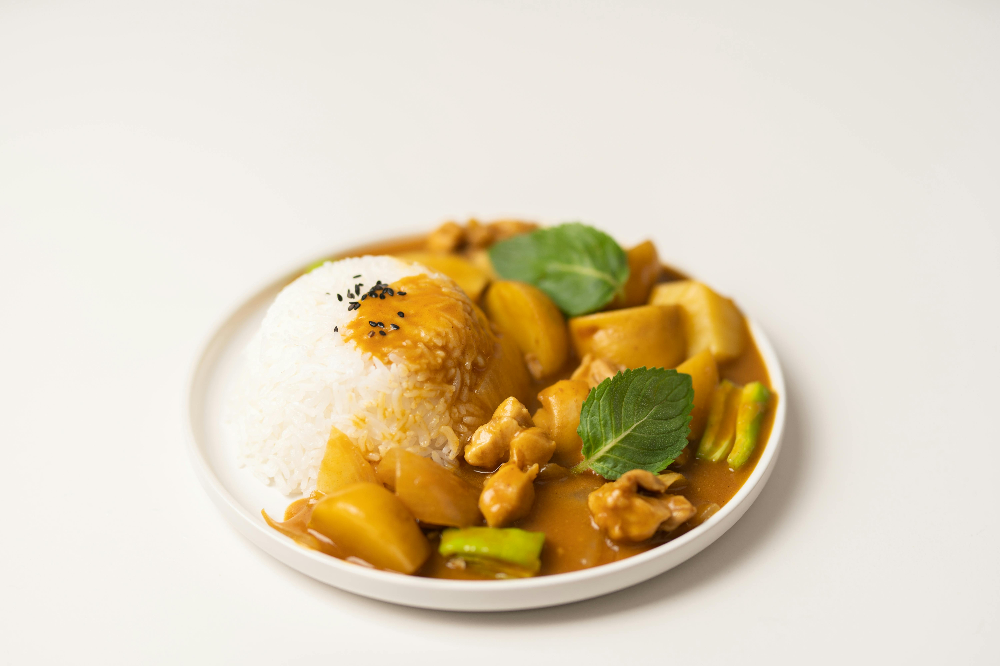

Chicken Curry with Rice

This hearty chicken curry with rice is a comforting one-pot style dinner that's both flavorful and simple to make. Tender chicken is simmerred in a fragrant curry sauce with onions, garlic, ginger, tomatoes, and creamy coconut milk. Served with fluffy basmati rice, it's a balanced meal that works for both weeknights and special dinners.
Ingredients(Serves 4)
For the curry
- 500g (1lb) chicken breast or thighs, cut into bite-sized pieces
- 2 tbsp cooking oil
- 1 large onion, finely chopped
- 2 garlic cloves, minced
- 1 tbsp fresh ginger, grated(or 1 tsp ground ginger)
- 2 tbsp curry powder (or a mix of turmeric, cummin, and corriander)
- 1 tsp chili powder (optional, for heat)
- 400g(1 can) chopped tomatoes
- 200 ml (¾) coconut milt or plain youghurt
- Salt & pepper to taste
- Fresh cilantro (for garnish)
For the rice
- 2 cups basmati or jasmine rice
- 4 cups water
- ½ tsp salt
Steps
- Cook the rice
- Rinse the rice in cold water until the water runs clear.
- In a pot, add rice, water, and salt
- Bring to a boil, then reduce heat, cover and simmer for 15 minutes.
- Turn off heat and let it sit (covered) for 5 minutes. Fluff with a fork
- Make the curry
- Heat oil in a large pan over medium heat.
- Add onions an d saute until golden brown (about 5 minutes)
- Stir in garlic and ginger, cook for 1 minute.
- Add curry powder (and chili if using) and toast for 30 seconds to release flavor.
- Add chicken pieces, cooking until lightly browned
- Stir in chopped tomatoes and simmer for 10 minutes.
- Pour in coconut milt (or youghurt) and simmer for another 10-15 minutes
- Taste and season with salt & pepper
- Serve
- Spoon the curry over rice.
- Garnish with fresh cilantro
- Serve with naan bread or chapati if you like!
Home